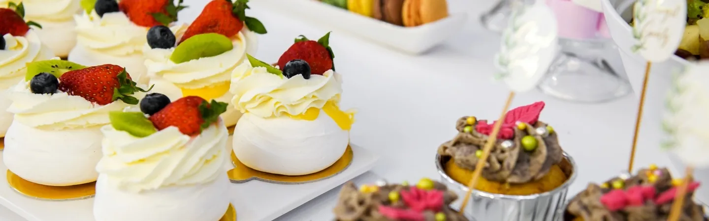
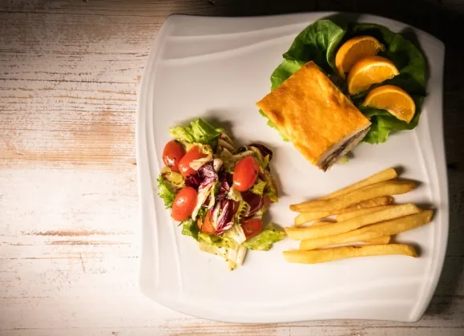
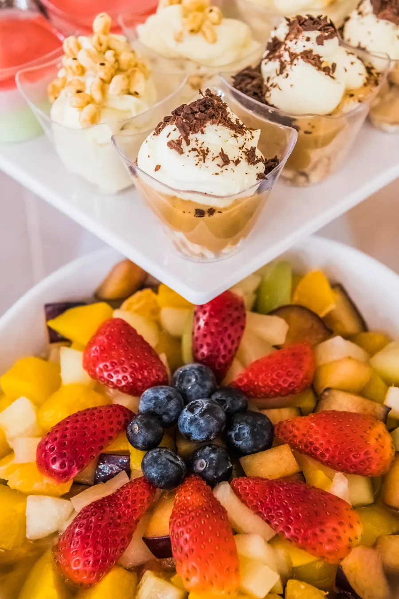

Kuchnia
Smaczne i wykwintne menu ustalane z każdą parą osobno. Na naszych produktach, z naszego gospodarstwa.
Własne ryby, wołowina i drób
Serwujemy zdrowe dania przygotowane na własnych wyrobach. Ryby, wołowinę i drób hodujemy w naszym gospodarstwie.
Menu układamy razem z Wami, łącznie ze słodkim stołem.




Catering
Przyjęcie poza naszym lokalem? Ustalamy liczbę gości i menu, a w dniu przyjęcia dowozimy na wskazaną godzinę świeże, ciepłe dania i przekąski.
Zapytaj o catering